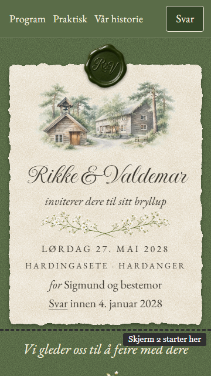
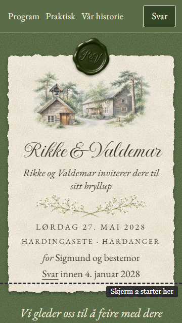

Navnene står i skriveskrift, og den er vanskeligere å lese for gjester som ser dårlig. Skjermlesere leser dem helt fint, fordi det er vanlig tekst i en annen skrift. Spørsmålet er om navnene også skal stå i vanlig skrift.


B skriver linja under navnene som «Rikke og Valdemar inviterer dere til sitt bryllup». Den går over to linjer, så svarfristlinja flytter seg 26 px ned (fra 530 til 556 px). Den får fortsatt plass på første skjerm, men bare så vidt.
Navnene finnes i vanlig skrift også i fanen i nettleseren og i bunnfeltet med telefonnumrene.